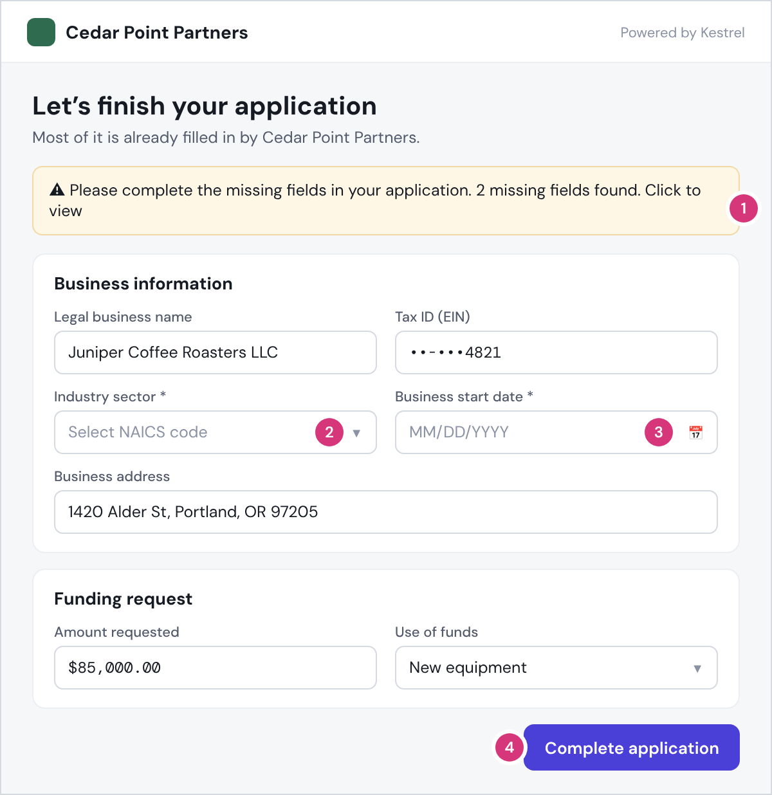
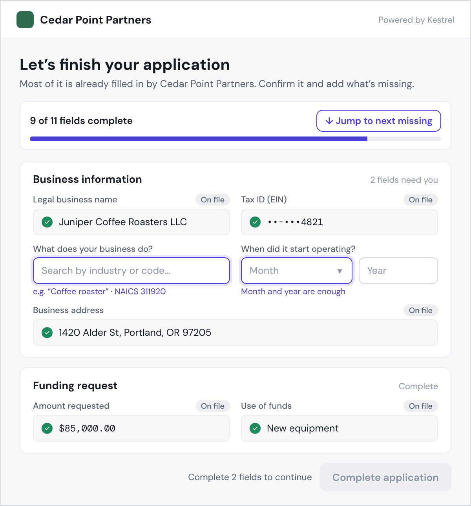
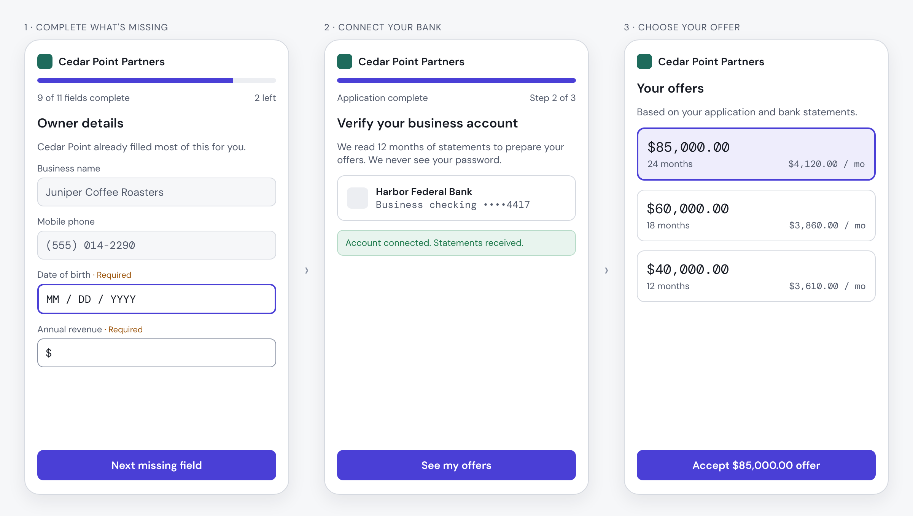
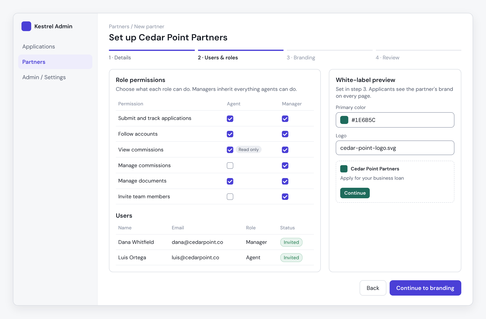

Un portal para 250+ partners de crédito
Un portal con roles, un admin interno y un flujo de solicitud rediseñado llevaron el alta de partners de 1–2 días a unas 4 horas, y bajaron el abandono del formulario de ~30% a ~17%.
- Rol
- Product design, codirigido con mi compañero de diseño
- Equipo
- 2 diseñadores, ingeniería, Director de Producto
- Periodo
- 2023–2025
- Usuarios
- 250+ partners, entre ellos US Bank y SoFi, y sus solicitantes
Los visuales son reconstrucciones hechas con Kestrel UI, una marca ficticia con datos ficticios. Muestran los principios del trabajo, no las pantallas reales de la empresa.

Contexto
Quantum Lending Solutions es una fintech de crédito en EE.UU. Otorga préstamos a pequeñas y medianas empresas que le llegan a través de una red de 250+ partners: bancos y fintechs como US Bank y SoFi.
Bancos y fintechs. Sus agentes refieren clientes y su manager supervisa el pipeline y las comisiones.
Dueños de PyMEs. Reciben una solicitud precargada con la marca de su partner y la completan.
Da de alta a cada partner, configura usuarios y marca, y opera los préstamos.
El reto
Optimizar el alta y la operación de partners
Desde que un partner se integra hasta que sus solicitantes completan la solicitud.
Por qué importa a los usuarios
Operaciones activa partners sin depender de ingeniería, el partner sigue su pipeline sin correos y el solicitante termina rápido.
Por qué importa al negocio
Cada día que tarda un alta es un día sin solicitudes de ese partner, y cada solicitud abandonada es un préstamo que no se otorga.
Fricciones detectadas
Dar de alta un partner tomaba 1–2 días y dependía de ingeniería.
Detectado en: sesiones de definición con operacionesLos partners perseguían el estatus por correo, sin visibilidad de sus comisiones.
Detectado en: sesiones con partners y operacionesCerca de 3 de cada 10 solicitantes abandonaban el formulario precargado.
Detectado en: Hotjar y DatadogPara quién diseñamos
Personas y sus jobs to be done, basadas en el research con los tres grupos, documentado en el Confluence de la empresa.
Agente de operaciones o partnerships de Quantum.
“Cuando un partner nuevo firma, quiero darlo de alta con sus usuarios, roles y marca en un solo flujo, para que empiece a operar sin depender de ingeniería.”
Frustración: configuración dispersa y errores de permisos que aparecían tarde.
Supervisa al equipo de agentes del banco o fintech.
“Cuando mi equipo envía solicitudes, quiero ver su estatus y mis comisiones en un solo lugar, para dar seguimiento sin perseguir correos.”
Frustración: perseguir el estatus por correo y no ver sus comisiones.
Dueño de una PyME, a menudo desde el celular.
“Cuando mi partner ya precargó mi solicitud, quiero ver solo lo que me falta, para terminar rápido y en una sola sesión.”
Frustración: formulario a medio llenar y lenguaje técnico.
Formato JTBD: cuando [situación], quiero [motivación], para [resultado esperado].
Resultados
para dar de alta un partner (aprox.)
abandono del formulario (aprox.)
se estandarizó la experiencia para 250+ partners
logro de diseño destacado, según el Director de Producto
Además
- Integración de data: el seguimiento de solicitudes y sus estados se integra en el portal.
- Estandarización de datos: menos solicitudes devueltas por datos incompletos.
- Agilidad: menos tiempo para completar la solicitud.
Reconocimiento
- Feedback positivo constante de US Bank.
- Reconocimiento al equipo de diseño en las demos quincenales por su trabajo con stakeholders.
Cifras aproximadas, observadas en producción con Hotjar y Datadog; no provienen de un estudio formal.
Mi rol
Codiseñé la experiencia con mi compañero de diseño; nos repartimos el trabajo por igual y lo refinamos juntos. Mi parte cubrió el research y las sesiones de definición con los tres grupos, los flujos y la arquitectura de información del admin, el portal y el flujo de solicitud, y el modelo de roles y permisos. Presenté en las demos quincenales, trabajé con compliance en la redacción, usé Hotjar y Datadog para detectar dónde se perdían los solicitantes y revisé cada release como aprobador visual en Chromatic.
Por qué atacamos estos retos primero
Matriz de Eisenhower adaptada a urgencia × importancia para el negocio.
Alta de partners dependía de ingeniería
Formulario abandonado (~30%)
Roles y permisos por partner
Claridad vs. compliance
Pedidos puntuales de partners, atendidos como tickets dentro del portal
Herramientas para developers y personalización avanzada del white-label (en QA a mi salida)
Retos clave
| Reto | Descubrir | Definir · HMW | Desarrollar | Entregar |
|---|---|---|---|---|
| El alta de partners dependía de ingeniería | Sesiones con operaciones: configuración dispersa y errores de permisos tardíos. | ¿Cómo podríamos lograr que operaciones dé de alta un partner sin depender de ingeniería? | Admin interno con flujo guiado: partner, usuarios, roles y marca white-label. | De 1–2 días a ~4 horas (aprox.) |
| El formulario precargado se abandonaba | Hotjar y Datadog: no encontraban los pocos campos que solo ellos podían llenar. | ¿Cómo podríamos llevar al solicitante directo a lo que le falta? | Ir al siguiente campo faltante, progreso visible y flujo único con Plaid. | Abandono de ~30% a ~17% (aprox.) |
| Un portal, usuarios con permisos distintos | Sesiones con partners: agentes y managers necesitaban ver cosas distintas. | ¿Cómo podríamos servir a ambos roles en un solo portal sin exponer lo que no les toca? | Roles: el manager gestiona comisiones; el agente solo las consulta. | Una experiencia estandarizada para 250+ partners |
| Claridad contra compliance | Grabaciones de sesión: lenguaje técnico, en parte exigido por compliance. | ¿Cómo podríamos hacer el formulario más claro sin tocar la redacción obligatoria? | Trabajamos con compliance: menos jerga y campos en secuencia lógica. | Preguntas más claras, mismo cumplimiento |


Antes: lo que veían los solicitantes
Las grabaciones de sesión y la analítica mostraron el mismo patrón en desktop y en móvil:
- El aviso no se leía como acción. “Click to view” tenía el mismo peso y color que el texto; los usuarios no lo identificaban como enlace.
- Industria por código NAICS. El solicitante no conoce el código de su negocio; fue uno de los campos donde más se atoraban.
- Calendario para una fecha que solo necesita mes y año. El otro campo con más fricción.
- Botón sin contexto. Sin conteo de campos pendientes ni progreso; en desktop el aviso pasaba desapercibido.
Además, lo precargado y lo faltante se veían igual.


Después: mismos datos, otra experiencia
- Progreso explícito. “9 of 11” y una barra quitan la incertidumbre; “Jump to next missing” lleva directo al campo pendiente.
- Lo precargado se distingue. Un check y la etiqueta “On file”: el solicitante confirma en lugar de revisar todo de nuevo.
- Lo que falta resalta. Borde y foco en índigo, con el conteo por sección (“2 fields need you”).
- Industria en lenguaje del usuario. Búsqueda por nombre; el código NAICS es secundario.
- Mes y año, sin calendario. Se pide solo el nivel de detalle necesario.
- Botón deshabilitado con motivo. “Complete 2 fields to continue” explica qué falta para avanzar.
De formulario a oferta en una sesión


1 · Completar: solo se piden los campos faltantes; lo demás llega del partner.
2 · Conectar banco: Plaid dentro del mismo flujo, sin salir a otra pantalla.
3 · Elegir oferta: el solicitante termina en la misma sesión, sin esperar otro correo.
Un sistema, la marca de cada partner


- Cada partner configura su marca (color primario y logo) y el solicitante la ve en todo el flujo.
- Coordiné con ingeniería los tokens de color y marca del design system para que el white-label cambiara la marca sin romper componentes ni contraste.
- Agentes y managers comparten la misma interfaz; los permisos deciden qué ve cada uno.
- Las herramientas para developers, para personalizar más a fondo marca y experiencia, estaban en QA a mi salida.
El portal funcionaba sobre el design system que construí desde cero. Cómo se construyó, implementó y mantuvo al día está en el primer caso de estudio.
Cómo lo validaría
Propuesta, no ejecutada en el proyecto
En el proyecto validamos con research, demos quincenales y analítica, pero no con pruebas de usabilidad formales. Así las haría:
5 participantes por perfil. Según Nielsen, 5 usuarios de un mismo perfil detectan cerca del 85% de los problemas de usabilidad.
Pruebas no moderadas con el prototipo de Figma: en móvil para solicitantes y en desktop para partners.
- Completar una solicitud precargada.
- Encontrar el estatus de una solicitud.
- Dar de alta un partner.
- Tasa de éxito.
- Tiempo por tarea.
- Abandono por campo.
- SEQ: facilidad percibida de 1 a 7.
Luego compararía contra Hotjar y Datadog en producción, para confirmar que lo observado en pruebas se repite con usuarios reales.
Aprendí
Las grabaciones de sesión mostraron un problema que nadie había reportado. Ver el uso real después de lanzar fue tan importante como el research inicial.
Haría diferente
Medir el abandono por campo desde el primer día y sumar pruebas de usabilidad no moderadas antes de cada release grande.
Volver al inicio